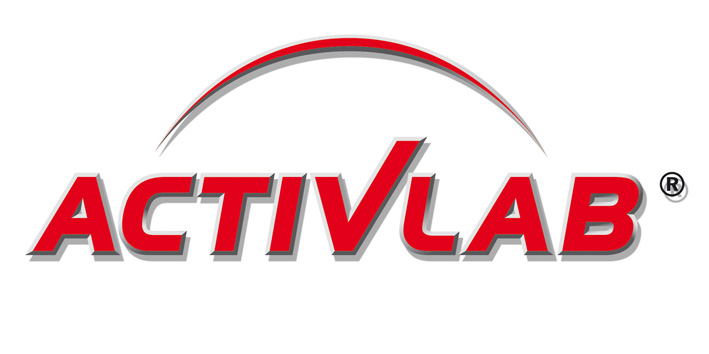
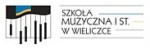
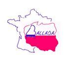
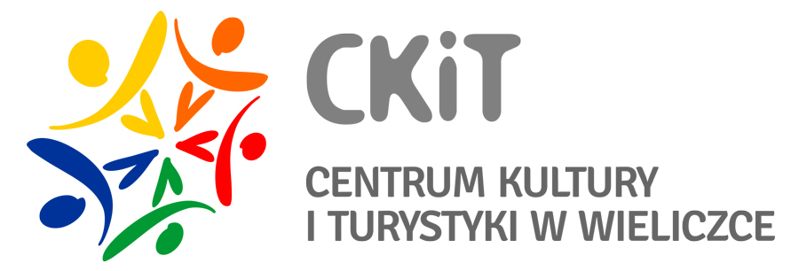
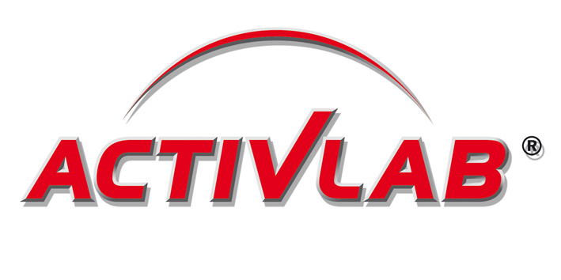
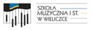
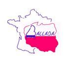
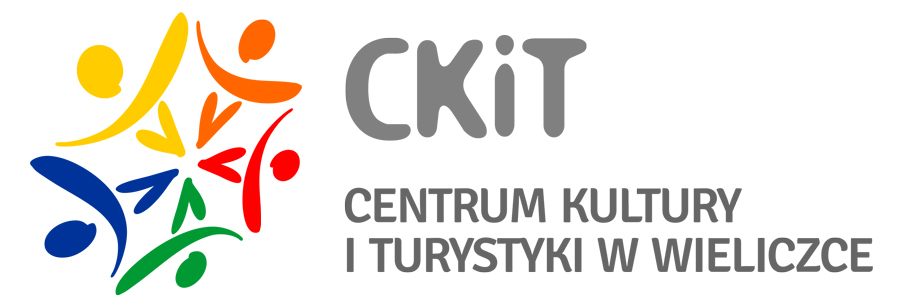

Nasi przyjaciele
Od początku istnienia chóru, naszym sponsorem jest firma „REGIS” Sp. z o.o. z siedzibą w Krakowie, ul. W.Sławka 3a.
Rok 2012- współfinansowanie zadania „Camerata jubileuszowa w gminie” oraz „Camerata – pielęgnując polskość”.
W latach 2012;2013;2014-współfinansowanie zadania „Camerata–pielęgnując polskość”.
Rok 2012-współfinansowanie zadania „Camerata – pielęgnując polskość” oraz patronat honorowy Marszałka Marka Sowy.
 Rok 2013 - współfinansowanie zadania „Camerata – pielęgnując polskość”.
Nasz sponsor Małopolski Bank Spółdzielczy.
 Szkoła Muzyczna I stopnia w Wieliczce
Kampus wielicki
"Ballada" Stowarzyszenie francusko - polskie.
 Chór działa pod patronatem CKiT w Wieliczce.
Rok 2012- współfinansowanie zadania „Camerata jubileuszowa w gminie” oraz „Camerata – pielęgnując polskość”.
W latach 2012;2013;2014-współfinansowanie zadania „Camerata–pielęgnując polskość”.
Rok 2012-współfinansowanie zadania „Camerata – pielęgnując polskość” oraz patronat honorowy Marszałka Marka Sowy.
 Rok 2013 - współfinansowanie zadania „Camerata – pielęgnując polskość”.
Nasz sponsor Małopolski Bank Spółdzielczy.
 Szkoła Muzyczna I stopnia w Wieliczce
Kampus wielicki
"Ballada" Stowarzyszenie francusko - polskie.
 Chór działa pod patronatem CKiT w Wieliczce.

© Stowarzyszenie Muzyczne Chór Camerata Wieliczka
Projekt i wykonanie:  Prowadzenie strony: Małgorzata Wysocka-Cebula
Prowadzenie strony: Małgorzata Wysocka-Cebula